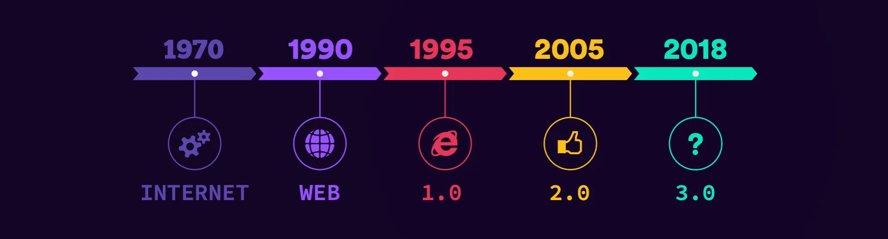
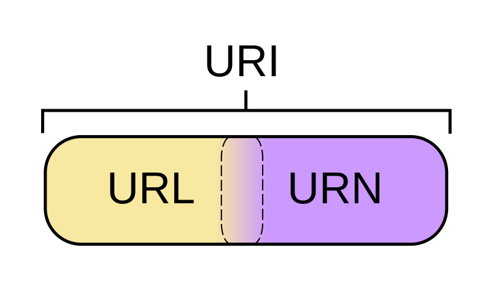
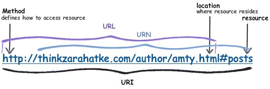
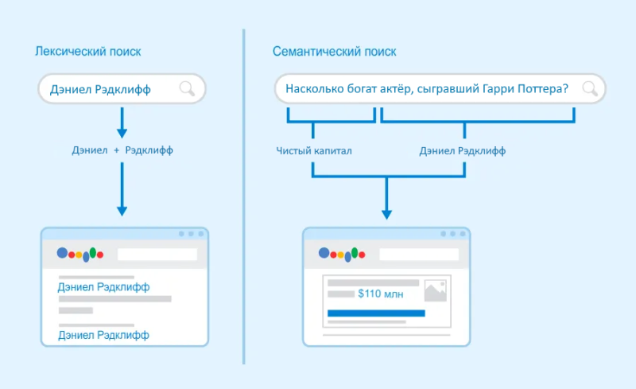

Что такое семантическая паутина и вёрстка?
Семантическая паутина и верстка являются двумя фундаментальными понятиями в современной веб-разработке и ориентированы на улучшение организации и семантики веб-страниц.
Оглавление
Введение
В последние года сфера интернет-технологий демонстрирует благоприятные тенденции роста и развития. Современное общество постоянно претерпевает изменения под воздействием развития ИТ. Это создает обширные возможности, но также включает в себя сложности, которые требуют тщательного рассмотрения и учета соотношения между инновациями и соблюдением общественно-культурных норм и этических принципов.
В технологическом контексте текущее состояние характеризуется быстрым и постоянным развитием и изменением различных аспектов Интернета и его приложений. В эти изменения входят: рост интернета вещей, интенсивное развитие беспроводных сетей, активное использование искусственного интеллекта и расширение облачных вычислений. Указанные технологические тенденции создают новые возможности в сферах, связанных со сбором, анализом и передачей данных, а также поднимают вопросы о безопасности, приватности и управлении информацией в сети.
Как цифровые технологии изменяют мир?
Современное состояние области в социальном контексте отличается широким распространением цифровых средств, что влечет изменения в образе жизни, общении, обучении и трудовой деятельности. Социальные сети, онлайн-платформы и цифровые медиа стали основными каналами для обмена информацией и выражения мнений. Создаются уникальные возможности для гражданской активности, но также чаще ставятся вопросы о фильтрации информации и влиянии алгоритмов на мнения людей.
Российская интернет-аудитория в 2020 г. выросла на 2%. Доля тех, кто когда-либо выходил в Сеть, достигла почти 90%, а для 76,7% россиян это стало ежедневной практикой. Уровень цифровых навыков занятого населения (33,4%) в среднем выше, чем у неактивных на рынке труда и безработных граждан.
Web 3.0


Web 3.0 представляет следующий этап развития интернета, в котором информация обретает смысловое значение (семантический веб). Семантика позволяет компьютерам более эффективно анализировать содержимое веб-страниц и взаимодействовать с ним. Web 3.0 ориентирован на создание более интеллектуальных, персонализированных и взаимодействующих с пользователем интернет-сервисов.
Ключевые технологические тренды в данной области
Децентрализация
Контроль над данными и контентом становится более равномерно распределенным и под пользовательским контролем
Искусственный интеллект
Анализ больших объемов данных и создание семантических связей между информацией
Семантическая паутина и вёрстка
Улучшение поиска и фильтрации информации
Концепция Web 3.0 является логическим продолжением Web 2.0, которая обеспечивала понимание информации в Web в первую очередь человеком. Web 3.0 же ориентирована на взаимодействие и понимание данных в Web компьютерными системами. Внедрение Web 3.0 позволяет интернету стать более интегрированным, интеллектуальным и контекстуальным. Вместо простого представления данных и информации, Web 3.0 нацелен на создание интернета, который способен понимать смысл информации, учитывать контекст и предоставлять более умные и персонализированные услуги и решения.
Таким образом, Web 3.0 является более мощным инструментом для удовлетворения потребностей пользователей, более эффективной передачи знаний и информации, а также более продуктивным инструментом для различных сфер деятельности, включая бизнес, образование, здравоохранение и многие другие.
Подробнее о возможностях и нововведениях концепции Web 3.0 можно прочитать в научных статьях В.А. Шачковой и Ш.Х. Позиловой.
Текущее состояние развития Web 3.0
Вопреки активному развитию концепции Web 3.0, множество систем до сих пор сохраняют зависимость от интерфейсов, характерных для Web 2.0. Хотя некоторые технологичные тренды внедряются уже во многих программных продуктах, говорить о повсеместном Web 3.0 на данный момент рано.
Основные причины, по которым технологии Web 3.0 могут не использоваться или использоваться не в полной мере:
Сложность технологий и разработки
Многие из технологий, связанных с Web 3.0, такие как блокчейн, интеллектуальные контракты и децентрализованные приложения, требуют сложной разработки и понимания новых концепций. Это может значительно замедлить процесс разработки и привести к трудноотловимым ошибкам.
Стандартизация
Отсутствие установленных стандартов для многих аспектов Web 3.0 затрудняет их массовое внедрение. Компаниям иногда приходится ждать установления стандартов, чтобы убедиться в совместимости своих продуктов и сервисов.
Регулирование и законодательство
Во многих странах законодательство в сфере криптовалют, блокчейна и децентрализованных приложений еще не полностью разработано или находится в процессе изменений. Непредсказуемость регулирования может вызвать опасения у компаний и инвесторов, что замедляет инвестиции и внедрение технологий.
Принятие рынком и потребителями
Рынок и пользователи могут сопротивляться изменениям и предпочитать привычные решения. Переход на новые технологии требует времени и обучения, что может удерживать их внедрение.
Бизнес-модели и инвестиции
Некоторые компании и организации опасаются, что переход на новые технологии потребует значительных инвестиций и кардинальных изменений в их бизнес-моделях.
Безопасность и конфиденциальность
Web 3.0 часто сталкивается с проблемами в области безопасности и конфиденциальности данных, так как децентрализованные системы могут представлять угрозы, которых нет в централизованных архитектурах. Решение этих проблем также требует дополнительных усилий и исследований.
Основные компоненты семантической паутины
Машинная обработка данных становится возможной благодаря двум ключевым аспектам, присущим семантической паутине: использованию унифицированных идентификаторов ресурсов (URI) и применению семантических сетей и онтологий.
URI (Uniform Resource Identifier) представляют собой ключевой элемент, который обеспечивает уникальную идентификацию ресурсов в сети Интернет. URI – это строка из символов, которая уникально определяет ресурс, будь то веб-страница, изображение, документ, или любой другой контент. URI могут быть выражены в виде URL (Uniform Resource Locator), который указывает на местоположение ресурса, или URN (Uniform Resource Name), который является идентификационным маркером и не предоставляет информацию о местоположении.
URI в контексте семантической паутины служат важным механизмом для связывания и описания данных. Они обеспечивают способность к разметке ресурсов семантической информацией и метаданными, что позволяет компьютерам и поисковым системам понимать смысл и связи между данными. Это содействует созданию сети взаимосвязанных данных и позволяет машинам эффективней извлекать и анализировать информацию на веб-страницах, делая контент более доступным для приложений и сервисов.
Пример URI:
Семантические сети – это графические структуры, которые представляют знания и концепции в виде узлов (вершин) и связей между ними. Семантические сети позволяют описывать семантику данных на веб-страницах и их взаимосвязи для того, чтобы информация была структурированной и интерпретируемой как людьми, так и компьютерами.
Онтологии – это формализованные модели знаний, которые определяют семантику данных и их отношения в конкретной предметной области. Онтологии определяют классы (типы данных), свойства (атрибуты) и отношения между ними. Их применение позволяет точно и формально описывать смысл данных на веб-страницах.
Техническую часть семантической паутины составляет семейство стандартов на языки описания, включающее XML, XML Schema, RDF, RDF Schema, OWL и другие.
Подробнее о компонентах семантической паутины можно прочитать в научных статьях И.А. Бессмертного и В.П. Тельнова.
Области применения семантической паутины
Семантическая паутина, как концепция, была предложена Тимом Бернерсом-Ли исследованиями конца 1990-х годов. С тех пор идеи и принципы семантической паутины начали внедряться в различных областях
Семантический поиск. Поисковые системы все больше учитывают семантическую информацию при анализе и ранжировании результатов поиска. Семантически размеченные данные позволяют точнее определять смысл запросов и улучшать качество поисковых результатов.
Большие данные и аналитика. Семантическая паутина способствует более глубокому пониманию контента, учитывая семантические связи и контекст, что особенно важно в условиях обработки обширных и разнообразных наборов данных. Семантическая паутина облегчает аналитику, позволяя эффективно выявлять паттерны, ассоциации и тренды, что в свою очередь способствует более точным и информативным выводам при анализе больших объемов данных.
Биоинформатика. В этой сфере семантическая паутина используется для описания и интеграции геномных данных, научных публикаций и медицинских знаний, что помогает исследователям и медицинским специалистам находить новые связи и делать более точные заключения.
Интернет вещей. В IoT семантическая паутина может использоваться для описания и взаимодействия между различными устройствами и датчиками, упрощая автоматизацию и интеграцию данных в умные системы.
Семантическая вёрстка
Семантическая вёрстка – это методология в веб-разработке, которая основывается на создании веб-страниц с акцентом на семантике и структуре контента, чтобы сделать их более понятными и интерпретируемыми как браузерами, так и поисковыми системами. Данный подход уделяет особое внимание использованию семантических элементов HTML (тегов) для разметки веб-страниц.
Основные принципы и характеристики семантической верстки:-
Использование семантических элементов: вместо применения HTML-тегов только для стилизации и визуального оформления, семантическая верстка предполагает использование тегов HTML в соответствии с их семантическим значением. Например, вместо тега <p> или <div> для создания заголовка следует использовать <h1>, для списка – <ul> и <li>, для абзаца – <p>, для навигации – <nav> и так далее. За счет этого, структура веб-страницы становится понятней и информативней.
Пример стандартной структуры семантической страницы:<html lang="ru"> <head> <meta charset="utf-8"> <title>Заголовок</title> </head> <body> <header class="main-header"> <!— Шапка сайта —> </header> <main> <!— Контент —> </main> <footer class="main-footer"> <!— Подвал сайта —> </footer> </body> </html> -
Использование атрибутов и значений семантики: кроме выбора правильных тегов, семантическая верстка включает в себя использование атрибутов и значений, которые добавляют семантику к элементам. Например, атрибут alt в элементе <img> используется для описания содержимого изображения для людей с ограниченными возможностями. Такие дополнительные сведения обогащают смысл контента.
Пример использования атрибута alt:
<img class="image" src="https://avatars.githubusercontent.com/u/94594092?v=4" alt="Обложка"> - Логическая структура: семантическая верстка стремится отразить логическую структуру контента. Элементы должны быть вложены и организованы в соответствии с их отношениями и порядком в тексте. К примеру, заголовки должны иметь иерархию с использованием <h1>, <h2>, <h3> и так далее, чтобы отразить структуру страницы.
- Доступность: одним из ключевых аспектов является обеспечение доступности. Использование правильных метаданных, атрибутов и меток, которые помогают пользователям с ограниченными возможностями лучше понимать и взаимодействовать с контентом.
- SEO-оптимизация: семантическая верстка улучшает оптимизацию поисковых систем (SEO), так как браузеры и поисковые роботы могут лучше понимать структуру и смысл страницы, что может повысить её позиции в результатах поиска.
Прочитать о подробных рекомендациях по применению семантической вёрстки можно в статьях Wezom и Medium.
Заключение
Рассмотрение концепций Web 3.0, семантической паутины и семантической вёрстки подчеркнуло неоспоримую значимость этих технологий для будущего интернета.
Web 3.0, представляющий следующий этап эволюции сети, ставит перед собой задачу создания более интеллектуальной и удобной среды для пользователей.
Семантическая паутина играет ключевую роль в этом процессе, обогащая данные смысловой информацией и способствуя более эффективному взаимодействию с контентом.
Семантическая вёрстка, в свою очередь, открывает новые возможности для более точного и структурированного представления информации на веб-страницах.
Все эти технологии в совокупности создают перспективы для улучшенного поиска, аналитики и взаимодействия в виртуальном пространстве, делая Web 3.0 более интеллектуальным и сфокусированным на потребностях пользователей.